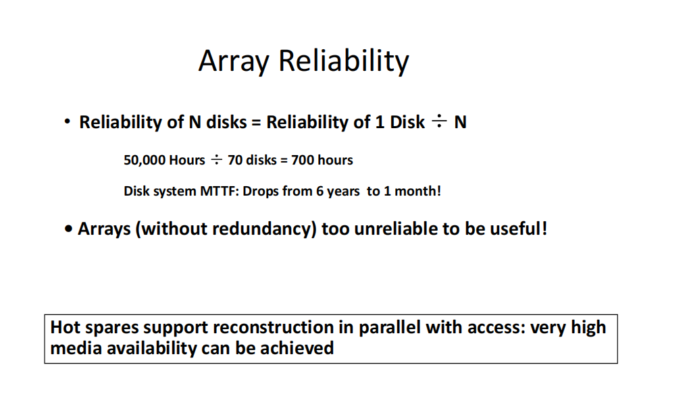

Chapter6：存储与IO
主要考虑可靠性和成本，以及设备的可拓展性与多样性，这些都是处理器不关心的。
都是与bus总线相连的。
I/O设备的三个特点：
- behaviour: 做输入input(鼠标、键盘)还是输出output(显示器)，这是针对内存的(input->read相当于内存从外部拿东西进来了 output->write内存往外写东西)。
- Partner: 就是处理的对象，有跟人交互的(鼠标键盘)，跟机器交互的(硬盘，之类的)
- Data rate：
评估I/O设备：
- 吞吐量(throughput): 单位时间内能传输的数据量，也有单位时间内能执行的I/O操作数量。
- 响应时间(reponse time)
"Useful" Example:
并非有用。
6.2 磁盘
磁盘的时间组成，我忘光了，就记得seek time的时间似乎是最多的。
可靠性：指所提供服务的质量，使得可以合理地依赖该服务。系统所提供的服务是指该系统的实际表现，依据其他与该系统交互的系统或用户的感知来观察。
冠冕堂皇的解释，然而不容易理解，其实对于磁盘，可靠性就是指磁盘提供有效的存储服务。
可靠：能执行正常服务的时间越长越好，就算坏了也别死的太难看。
MTTF: Mean Time To Failure，平均失效时间，指系统无故障运行的平均时间。
MTTR: Mean Time To Repair，平均修复时间，指系统从故障到修复的平均时间。
MTBF: Mean Time Between Failures，平均故障间隔时间，指两次故障之间的平均时间。
\(MTBF = MTTF + MTTR\)
\(Availability=\frac{MTTF}{MTTF+MTTR}\)
提升可靠性的方法：
- 故障避免： 通过设计来防止故障的发生。
- 故障容忍： 通过使用冗余技术，使系统在发生故障的情况下仍能遵守服务规范，这主要适用于硬件故障。
- 故障预测： 预测故障的存在和发生，适用于硬件和软件故障。
Hamming纠错码
不在考纲，随便吧。
-
Hamming distance 有效编码中，两个不同的码字之间不同的位数的个数。 e.g. 8421： 0000->0 0001->1 Hamming距离为1，因为只有一位不同。
-
最小距离为2，可以发现1位的错误
- 最小距离为3，可以发现2位的错误，也可以发现并改正1位的错误
我们使用小的磁盘阵列来代替大磁盘，这样更廉价，但是可靠性降低，因为一个小磁盘坏了就去了。

冗余磁盘阵列（RAID）
- 文件被“条带化”存储在多个磁盘上
- 冗余提供了高数据可用性
可用性：即使某些组件发生故障，服务仍然可以继续提供给用户 + 磁盘依然会发生故障 + 内容可以通过从冗余存储的数据信息中重建
→ 存储冗余信息需要额外的容量 → 更新冗余信息会带来带宽上的额外开销

- RAID 0: 无冗余
- 数据在磁盘阵列中按条带化方式分布，但没有冗余来容忍磁盘故障。
- 它还可以提高大规模访问的性能，因为多个磁盘可以同时操作。
- 解释：
RAID 0采用条带化技术（striping），将数据分割成多个部分并分布在不同的磁盘上。这样可以提高读取和写入速度，因为多个磁盘同时工作。然而，这种配置没有冗余机制，如果其中一个磁盘发生故障，所有数据都将丢失。因此，RAID 0 适合对性能有高要求，但对数据安全要求较低的场合。
-
RAID 1: 镜像盘
- 每个磁盘的内容会完整地复制到另一个磁盘上（即“镜像”）。
- 写操作的带宽有损失：逻辑写入操作等于两个物理写入操作。
- 读取操作可能会优化。
- 成本最高：需要 100% 的存储空间开销。
- 解释：
RAID 1是通过磁盘镜像实现数据冗余。每个磁盘上都有一份完整的数据副本，所以如果一个磁盘发生故障，另一个磁盘仍然能提供完整的数据。虽然提供了高可用性和数据安全性，但它的缺点是需要双倍的存储空间来存储相同的数据，因此成本较高。
-
RAID 3:位交错奇偶校验磁盘
- 专门一个P盘来存储其他所有盘的每位置和mod2，叫做奇偶校验位，某个盘坏了可以依靠推出。
- 瓶颈在于不管在哪个盘写都要update到奇偶校验盘。
-
RAID4: 块
- RAID4仍有P盘，但是检测磁盘数据是否错误并不依赖于P盘，而是每个块的error detection field。
- 逻辑写就是两次读：原先的D0与P和两次写：D0更新数据写入D0与先计算出新旧D0的差值，与旧P算出一个新值，再写入P。
-
RAID5: 块交叉
-
RAID6: 两个盘
有P有Q。
6.4 总线
共享通信链路（一个或多个线路） !:设计困难： + 可能成为瓶颈 + 总线长度 + 设备数量 + 权衡（快速总线访问与高带宽） + 支持许多不同的设备 + 成本
两套线路： 1. 控制总线：控制信号，并指明数据线上的数据类型 2. 数据线：信息(word/地址/)between source and destination
总线事务 包括两个部分：发送地址和接收或发送数据 两种操作： + 输入：将数据从设备输入到内存 + 输出：将数据从内存输出到设备
总线的类型： 1. processor‐memory (short, high speed, custom design) 带宽尽可能大 2. I/O (lengthy, different devices, standardized, e.g., SCSI) 新老设备都可以用 3. backplane (high speed, often standardized, e.g., PCI)
下面是每个的解释： + 处理器-内存（Processor-memory）： 这一部分指的是 处理器 与 内存 之间的通信连接。处理器与内存之间的连接通常是 短距离 的，因为它们位于同一个计算机系统内部，且通过专门的 高速总线 进行数据传输。 高速：处理器和内存之间的通信需要非常快速，以确保处理器能够迅速访问内存中的数据和指令。 定制设计：这种连接通常是根据特定的系统需求或硬件架构进行 定制设计，例如不同的 CPU 和内存可能有不同的接口和连接方式，目的是为了实现更高的传输效率和速度。 + 背板（Backplane）： 背板 是指 计算机或设备中的主要连接板，它用于连接多个内部组件，如主板与各个外部设备之间的连接。背板提供了多个接口或插槽，让不同的部件通过 高速连接 进行通信。 高速：背板连接通常具有较高的传输速率，以确保设备之间的数据交换能够快速进行。 标准化：许多背板接口是 标准化的，这使得不同设备之间可以兼容。例如，PCI（Peripheral Component Interconnect） 就是一个标准的背板总线，用于连接计算机中的扩展卡（如显卡、网卡、声卡等）。这种标准化确保了不同硬件设备之间的互操作性和易于集成。 + 输入/输出（I/O）： I/O 指的是计算机与外部设备之间的数据交换，通常包括 长距离 传输。不同的外部设备（如硬盘、打印机、显示器等）通过 I/O 总线与计算机进行通信。 长距离：I/O 设备通常位于计算机系统的外部，与处理器和内存之间的连接相比，I/O 设备的连接距离较长。由于距离较远，数据传输的速度可能会受到影响。 涉及不同设备：I/O 总线需要支持各种外部设备，它们的数据传输需求和通信协议各不相同。例如，硬盘可能需要大带宽，而键盘或鼠标只需要少量数据传输。 标准化：为了确保不同设备之间能够兼容，I/O 接口通常是 标准化的。例如，SCSI（Small Computer System Interface） 是一种标准化的 I/O 接口，用于连接存储设备（如硬盘和光驱），它提供了高速、可靠的数据传输能力。


同步与异步：
- 同步总线 使用时钟和
同步协议，速度快且小巧，但每个设备必须以相同的速率运行，且时钟偏移要求总线必须很短。 - 异步总线 不使用时钟，而是使用
握手信号来进行通信。
Example:
总线管理者：
processor is always a bus manager
总线仲裁：一般都是多个设备共享一条总线进行数据通信，其中如果多个设备同时发送接收数据的话，从而产生总线竞争，会导致通信冲突导致通信失败，所以在总线上要引入一个仲 裁机制来决定什么时间谁来占用总线的通信
- (阻塞式)链式结构：越远优先级越低，近的有需求就管不到后面的。阻塞式是因为如果中间线断了后面就去了。unfair!
- 集中式仲裁，大家是公平的。
- sell selection：碰撞检测，谁空了谁用
因素： 1. 优先权(谁先用) 2. 公平性